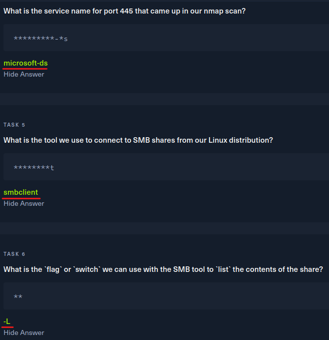
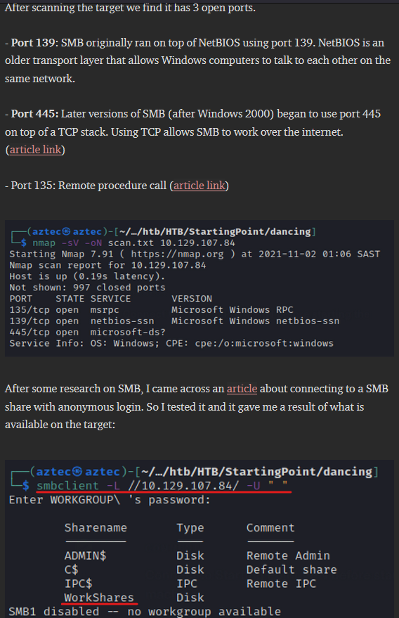

SMB
SMB
Sunucu İleti Bloğu, Microsoft'un bir ağdaki düğümler arasında dosyalara ve yazıcılara paylaşılan erişim sağlamak için oluşturduğu bir iletişim protokolüdür.


SMB Hack the box solution example: